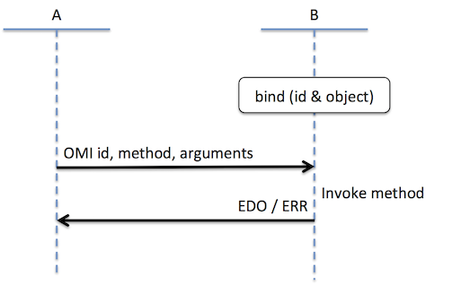
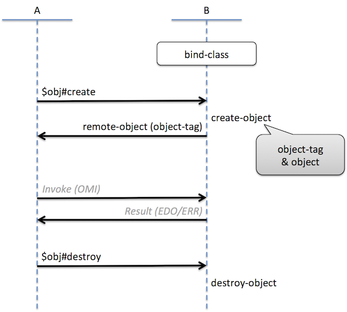

Support
CrossBorderBridge がサポートするプラットフォームと言語を下表に示します。
| Platform | Language |
|---|---|
| Webブラウザ, WebView | JavaScript (ES5), TypeScript |
| Android 4.1 (API Level 16) 以降 | Java |
| iOS 8.0 以降 | Objective-c, swift |
Repositories
CrossBorderBridge 関連リポジトリの一覧を示します。
| Respository | Type | Platform | Language |
|---|---|---|---|
| data-bus | DataBus | Web | TypeScript |
| data-bus-android | DataBus | Android | Java |
| data-bus-ios | DataBus | iOS | Objective-c |
| data-channel | DataChannel | Web | TypeScript |
| data-channel-android | DataChannel | Android | Java |
| data-channel-ios | DataChannel | iOS | Objective-c |
| function-channel | FunctionChannel | Web | TypeScript |
| function-channel-android | FunctionChannel | Android | Java |
| function-channel-ios | FunctionChannel | iOS | Objective-c |
| object-channel | ObjectChannel | Web | TypeScript |
| object-channel-android | ObjectChannel | Android | Java |
| object-channel-ios | ObjectChannel | iOS | Objective-c |
| memory-queue | データ送受信方式 | Web | TypeScript |
| multiplex-data-bus | DataBus派生 | Web | TypeScript |
| memory-queue-data-bus | DataBus派生 | Web | TypeScript |
| post-message-data-bus | DataBus派生 | Web | TypeScript |
| object-channel-wrapper | Utility | Web | TypeScript |
Webでは独立したリポジトリで提供している派生物やUtilityは, Android や iOS では派生元等のリポジトリに同梱して提供しています。
Architecture
CrossBorderBridge は, 次の4層の機能群で構成されています。
| Layer name | Description |
|---|---|
| DataBus | UTF-8テキスト形式のデータを送受信する IPC (Inter Process Communication) 機構 |
| DataChannel | DataBusを用いて, 要求/応答形式のデータ通信をできるようにしたもの |
| FunctionChannel | DataChannelを利用したRPC機構 |
| ObjectChannel | FunctionChannelを利用したオブジェクト指向モデルのRPC機構 |
Specification
CrossBorderBridge 各層の仕様を示します。
Data Bus
- DataBus は, データが流れる経路 です
- データ送受信方式 (例: TCP/IP, pipe, message-queue ...etc) 毎に派生クラスを作成するものとします
インタフェース
DataBusは, 以下のメソッドを実装するクラスとします。
| Method | Description |
|---|---|
send |
任意個数のデータを送信するメソッド |
addHandler |
データを受信するハンドラを登録するメソッド |
removeHandler |
addHandlerしたものを解除するメソッド |
destroy |
破棄するメソッド |
以下に, この条件を満たすインタフェースを typescript で定義した例を示します。
interface DataBus {
send(...data: any[]): void;
addHandler(handler: (...data: any[]) => void): void;
removeHandler(handler: (...data: any[]) => void): void;
destroy(): void;
}
データ形式
- DataBus内に流すデータは, 0個以上のデータから成る任意要素数のJSON配列とします
- データの型は, JSON形式で表現可能な任意の型 とします
[
data1, data2, ..., dataN
]
JSON: RFC7159及びその関連RFCを参照
派生クラス
DataBusの派生クラスとして, 次のものを提供しています。
| Class name | description |
|---|---|
| WebViewDataBus | AndroidのネイティブアプリとWebView間のDataBus |
| CBBWKWebViewDataBus | iOSのネイティブアプリとWKWebView間のDataBus |
| PostMessageDataBus | Webアプリケーションのiframe間のDataBus |
| MemoryQueueDataBus CBBMemoryQueueDataBus |
同一プロセス内のDataBus（テスト用途） |
| MultiplexDataBus CBBMultiplexDataBus |
DataBusに流すデータに識別名を付けて多重化できるようにしたもの |
WebView Data Bus
WebViewDataBusは, スマートフォンのネイティブコードとWebView上で動作するWebコンテンツ（HTML5）間のブリッジ通信を行うDataBusの実装です。
WebViewDataBusを用いることで, 通常のHTML5では実現が難しい機能を実装し易くなります。
Multiplex Data Bus
MultiplexDataBusは, データの識別と多重化（多層化）を実現するDataBusの実装です。
データ形式
MultiplexDataBusは, DataBus上に流すデータの先頭要素をデータを識別するID（dataId）とします。
[
"dataId", data1, data2, ..., dataN
]
データの多層化
以下に, データを多層化する例を示します。
// 伝送経路のDataBusを作成
var dataBus: DataBus = new MemoryQueueDataBus(sender, receiver);
// DataBus上にslotAを作成
var slotA: MultiplexDataBus = new MultiplexDataBus(dataBus, "slotA");
// slotA上にslotBを作成
var slotB: MultiplexDataBus = new MultiplexDataBus(slotA, "slotB");
// slotB上にslotCを作成
var slotC: MultiplexDataBus = new MultiplexDataBus(slotB, "slotC");
slotC.send("foo") をした時に リモート側※ で受信するデータは, 下表のようになります。
※リモート側でも同様の階層構成のDataBusとMultiplexDataBusを設置しているものとします。
| DataBus layer | Receive Data |
|---|---|
dataBus |
["slotA", "slotB", "slotC", "foo"] |
slotA |
["slotB", "slotC", "foo"] |
slotB |
["slotC", "foo"] |
slotC |
["foo"] |
Data Channel
- DataChannelは, DataBusを用いて, 要求/応答形式のデータ通信（双方向データ通信）をできるようにしたものです
- DataBusと同等の単方向通信にも対応しています
データ形式
DataBus上に流すデータを次の2要素のJSON配列形式とします。
[
dataType,
data
]
dataType
dataType は data の種別を特定するための 1 から 4 の数値です。
| dataType | name |
|---|---|
1 |
PUSH data |
2 |
REQUEST data |
3 |
RESPONSE data |
4 |
ERROR data |
PUSH data
PUSHデータは, 応答を返信する必要が無い単方向通信データです。
[
1,
[
ChannelPacket
]
]
ChannelPacket の説明は後述します。
REQUEST data
REQUESTデータは, 送信先に応答の返信を求める双方向通信データです。
[
2,
[
RequestTag,
ChannelPacket
]
]
RequestTag, ChannelPacket の説明は後述します。
RESPONSE data
RESPONSEデータは, REQUESTデータに対する応答です。
[
3,
[
RequestTag,
ChannelPacket
]
]
RequestTag, ChannelPacket の説明は後述します。
ERROR data
- ERRORデータは, REQUESTデータに対するエラー応答です。
- ERRORデータは, DataChannel自身の異常ケース でのみ用います。
[
4,
[
RequestTag,
ErrorType
]
]
RequestTag の説明は後述します。
ErrorType には, 次の何れかの文字列が設定されます。
| ErrorType | Cause |
|---|---|
"Timeout" |
応答待ち時間がタイムアウト指定時間を超過 |
"Close" |
応答を受信する前にDataChannelがクローズされた |
Channel Packet
- ChannelPacketの内容はDataChannelの利用者が自由に定義できます
- DataChannel自身はChannelPacketの内容について感知しません
Request Tag
- RequestTagは, 応答を必要とする要求を送信する際に要求元で生成する次の形式の電文です
- 形式:
tagName:tagIndex
- 形式:
tagNameは適当な文字列ですtagIndexは 0 または 1以上の整数であり, 要求毎にユニークな値とします- RequestTagは, REQUESTデータを作成する時に生成します
- RESPONSEデータ（ERRORデータ）には, REQUESTデータから指定されたものと同じRequestTagを指定することで, RESPONSEデータ（ERRORデータ）がどのREQUESTデータに対応するものかを特定します
Function Channel
FunctionChannelは, DataChannelを利用したRPC (Remote Procedure Call) 機構です。
Sequence

- A: RPC実行元
- B: RPC実行先
OMI
- リモート側に対して オブジェクト・メソッド の実行を要求します
- リモート側では, 実行されるオブジェクトを予め bind している必要があります
ChannelPacket format:
[
"omi", [
id,
methodName,
[ arguments ]
]
]
id: 実行先で bind されているオブジェクト識別名 (string型)methodName: 実行するメソッド名 (string型)arguments: 実行するメソッドに渡す引数 (json-array型)
EDO
OMIの実行結果(戻り値)の応答OMIをPUSH送信した場合は省略する
ChannelPacket format:
[
"edo", [
Result
]
]
Result: OMIで要求されたメソッドの戻り値 (any型)
ERR
OMIの実行失敗応答OMIをPUSH送信した場合は省略する
ChannelPacket format:
[
"err", [
ErrorType
]
]
ErrorType には, 次の何れかの文字列が設定されます。
| ErrorType | Cause |
|---|---|
"Timeout" |
DataChannelのエラー（応答待ち時間がタイムアウト指定時間を超過） |
"Close" |
DataChannelのエラー（応答を受信する前にDataChannelがクローズされた） |
"ObjectNotBound" |
bindされていないFunctionChannelへのOMI要求 |
"MethodNotExist" |
bindされているオブジェクトに未定義のメソッドのOMI要求 |
Interface
type FunctionChannelCallback = (error?: string, result?: any) => void;
interface FunctionChannel {
bind(id: string, object: Object): void;
invoke(id: string, method: string, args?: any[], callback?: FunctionChannelCallback, timeout?: number): void
}
bind
- オブジェクト識別名(id) と オブジェクト(object) を結合
- オブジェクト識別名(id) は リモート から
invokeされる時のキーとなる - 重複する オブジェクト識別名(id) を指定した場合は上書きされる
オブジェクト識別名(id) は 必ずしもクラス名と一致していなくても良い ものとします。
- 例えば, 同一クラスから生成した複数オブジェクトをFunctionChannelで扱いたい場合,
className:1という形式で扱うことを推奨します- 複数オブジェクトを生成しない場合, オブジェクト識別名(id) はクラス名と合わせておくことを推奨します
invoke
- リモート で
bindされているメソッドを実行 (OMIを送信) id: オブジェクト識別名method: メソッド名args: 引数 (引数が無い場合は指定を省略 orundefinedを指定)callback: 戻り値を受け取るハンドラ (voidor 不要の場合は指定を省略)timeout: 実行のタイムアウト時間をミリ秒単位で指定 (省略時はタイムアウトしない)
FunctionChannelCallback
type"error":error-typeが格納されている ( 正常時はundefined)"result": 正常時は戻り値が格納されている
Object Channel
- ObjectChannelは, FunctionChannelを利用したオブジェクト指向のRPC (Remote Procedure Call) 機構です
- インスタンスの生成/破棄に FunctionChannel の $objチャネルを用います
- メソッドの呼び出しには, FunctionChannel の機能をそのまま利用します
$obj channel
interface $obj {
/**
* リモート側のクラスのインスタンス化
*
* @param className インスタンス化するクラス名
* @param args コンストラクタに渡す引数
* @return 文字列形式のObjectTag
*/
create(className: string, [...args: any]): string;
/**
* リモート側でインスタンス化したオブジェクトを破棄
*
* @param objectTag 破棄対象のリモートオブジェクト（$obj.createの戻り値）
*/
destroy(objectTag: string): void;
}
sequence

- A: RPC実行元
- B: RPC実行先
bind-class
- RPCでインスタンス化できるクラスを登録します
- JavaScriptの場合は
functionをクラスとします
create-object
- bind-classしているクラスのインスタンス化を行います
- remote-objectとそれに紐付くobject-tagが生成されます
- また, FunctionChannelを用いて, object-tagを識別名としてインスタンス（オブジェクト）をbindします
remote-object
- ObjectChannelのオブジェクト実体です
- オブジェクト(クラスインスタンス) と それを紐付けるタグ で構成されます
object-tag
string format
"クラス名:クラス別オブジェクト通し番号(数字)"
json format
{
"className": クラス名,
"objectId": クラス別オブジェクト通し番号
}
invoke-method
FunctionChannelのinvokeをそのまま利用します
destroy-object
- remote-object の 破棄 (参照外し)
- remote-object に destroyメソッド (destructor) が定義されている場合は実行
 このサイトの画像は、
このサイトの画像は、